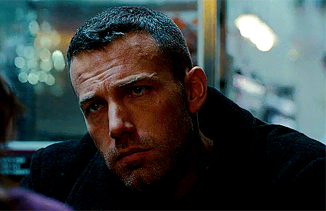

The Accoutant - 2016
Christian Wolff, played by Ben Affleck, is an accountant – one of the most desired in the business. Yet, while he may seem like your run-of-the-mill number puncher, he is renowned around the world. Frequently employed by high-powered clients, he is the number one man to call in the worst of financial situations.
Early on in the film, Christian is hired by an up-and-coming prosthetic robotics company after a slight discrepancy in their numbers is discovered by their Junior Accountant Dana Cummings, played by Anna Kendrick. Over the course of one night, Christian plows through their books and ledgers from the past fifteen years, uncovering a discrepancy and a conspiracy that goes deeper than any one had ever imagined.
What makes this film different than action movies before it is that Christian suffers from high functioning autism, with a narrow focus and an uncontrollable drive to complete a task being some of the traditional symptoms. For his entire life, he was pushed to overcome his disability and be a valuable member of society. Now as an adult, he has found the strength, resilience and tools to make this possible – to overcome adversity.
The Accountant: Almost Perfect Puzzle - Stephanie ArcherBack to The Top
The Town - 2010
Doug is part of a gang of thieves, the brains of the group. His Disunity: Basically a good guy doing bad things. After his gang robs the bank, kidnapping Claire in the process, James (who has a violent streak) decides they need to take out Claire as she is a potential witness. Doug says he’ll handle it. He tracks Claire, eventually intersecting, then falling in love with her — another Disunity element, sleeping with a potential enemy (as far as James is concerned). A third Disunity dynamic: Doug is living a lie with Claire because he does not tell her that he was part of the gang that kidnapped her.
There are more Disunity elements, both involving Doug’s parents: Doug’s father is serving multiple life sentences in prison because he led a life of crime, also based in Charlestown. So Doug has a father who isn’t around. Also absent is Doug’s mother who, according to family lore, walked out on Doug and his father, never to be heard from again.
Analysis: “The Town - Scott Myers What does Doug want? To be with Claire. What does he need? To face up to the fact that at his core, he’s a decent and good human being who should not be involved in illegal activities. This puts the story squarely in mythic territory, a modern spin on a classic Western where the gunslinger wants to put away his gun for good — but circumstances don’t allow it.
Back to The Top
Good Will Hunting - 1997
Chuckie Sullivan is Will's best friend… which is saying a lot because Will doesn't trust that many people. Chuckie's also a pretty witty guy in his own right, as we find out when he jokes with his buddy about a sandwich:
Good Will Hunting Chuckie Sullivan (Ben Affleck) - Shmoop CHUCKIE: All right, well, give me your f***ing sixteen
cents
that you got on you now, and we'll put your f***in' sandwich on layaway.
CHUCKIE: All right, well, give me your f***ing sixteen
cents
that you got on you now, and we'll put your f***in' sandwich on layaway.
On top of his wittiness, Chuckie is also one of the most loyal dudes you'll ever meet. The second he sees Will get ready for a fight, he follows him to help out and tells his other buddy, "Let me tell you somethin'. If you're not out there in two f***in' seconds, when I'm done with them, you're next."
When it comes to living in the streets, Chuckie knows what it means to have someone's back.
At the end of the day, Chuckie is a good enough friend to know that Will needs to escape their childhood neighborhood and go out to do great things. He also gets his wish in the movie's final scene, when he walks up to Will's door and realizes that Will has taken off. Chuckie doesn't know where Will has gone and he doesn't need to know. He's just happy that Will has finally decided to get out of their neighborhood and see the world beyond it.
Back to The Top